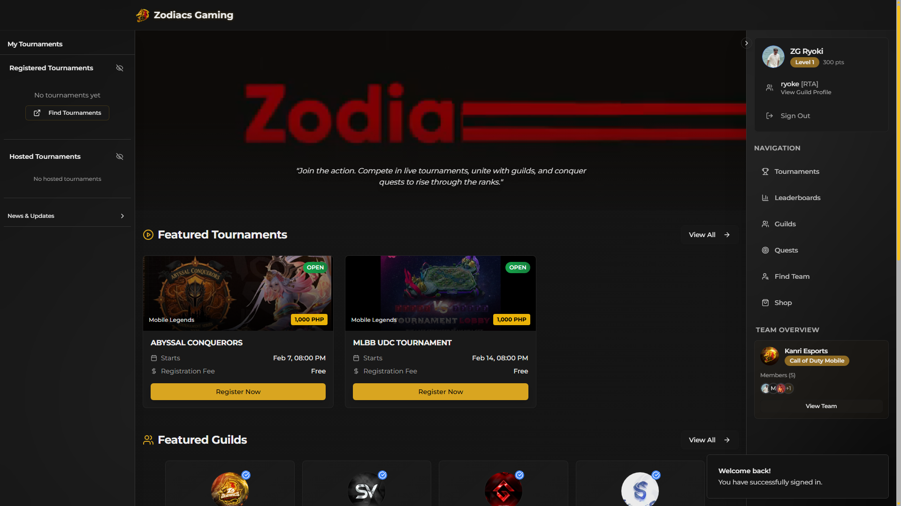

P-001

LIVE SYSTEM ↗COMMUNITY PLATFORM / FULL-STACK
Zodiacs Portal
A real-time esports ecosystem for tournaments, guilds, recruitment, quests, commerce, and tiered moderation. Designed as one coherent operational platform rather than a collection of disconnected features.
- React
- TypeScript
- Supabase
- Edge Functions
- PostgreSQL